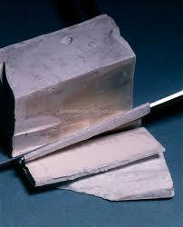

SODIUM

*discovered by:Sir Humphrey Davy in 1807*
Most important of all alkali metals
PHYSICAL PROPERTIES
1)Atomic size(radius): 227 pm
2)Atomic mass: 22.989769 u
3)Density : 970 kg m–3 at 20 °C (higher than Lithium)
4)Melting point: 97.5 °C (low)
5)Boiling point : 883 °C(relatively high)
6)Soft metal
7)Silvery white
8)High thermal conductivity
9)Good conductor of electricity bec. of Sodium's sea of delocalized electrons among the uni-positive ions present in the structure
10)Monovalent element
11)Naturally found in sea water
Chemical properties
1)Atomic no. 11
2)Electronegativity (according to Pauling): 0.9
3)Isotopes: 3
4)High active metal, ( forming a wide variety of compounds with nearly all inorganic and organic anions)
5)Reacts quickly with water (snow & ice) forming sodium hydroxide.
6)Kept under kerosene oil bec. it lose its metallic luster when exposed to air.
7)Doesn’t react with nitrogen
8)React with Ammonia forming sodium amide
9)Sodium and hydrogen react above 200ºC to form sodium hydride
10)Sodium hardly reacts with carbon, but it does react with halogens.
11)Sodium doesn’t react with paraffinic hydrocarbons.
12)The reaction of sodium with alcohols is similar to the reaction of sodium with water, but slower.
13)Soluble in water
14)Dissolves in water forming alkaline solution
Uses of Sodium
Sodium in its metallic form is very important in making esters and in the manufacture of organic compounds. Sodium is also a component of sodium chloride (NaCl) a very important compound found everywhere in the living environment. Other uses are: to improve the structure of certain alloys; in soap, in combination with fatty acids, in sodium vapor lamps, to descale metals, to purify molten metals.
Solid sodium carbonate is needed to make glass.
General information of sodium
Sodium is the sixth most abundant element in The Earth’s crust, which contains 2, 83% of sodium in all its forms. Sodium is, after chloride, the second most abundant element dissolved in seawater. The most important sodium salts found in nature are sodium chloride (halite or rock salt), sodium carbonate (trona or soda), sodium borate (borax), sodium nitrate and sodium sulfate. Sodium salts are found in seawater (1.05%), salty lakes, alkaline lakes and Soluble in water.
Reactions of Sodium
Reaction of Sodium with Oxygen
2Na(s) + O2(g) ---> 2Na2O2(s)
4Na(s) + O2(g) --->2Na2O(s)
Reaction of Sodium with Water
2Na(s) + 2H2O --->2NaOH(aq) + H2(g)
Reaction of Sodium with Halogens
2Na(s) + F2(g) --->NaF(s)
2Na(s) + Br2(g) ---> NaBr(s)
2Na(s) + Cl2(g) --->NaCl(s)
2Na(s) + I2(g) --->NaI(s)
Reaction of Sodium with acids
2Na(s) + H2SO4(aq) --->2Na+(aq) + SO42-(aq) + H2(g)
2Na(s)+2HCl(aq)--->2NaCl(aq)+H2(g)
NaOH( aq ) + HNO3 (aq) --->NaNO3 ( aq ) + H2O ( l )
Reaction of Sodium with Bases
2Na(s) + 2H2O --->2NaOH(aq) + H2(g)
Reaction of Sodium with carbon dioxide
2Na2 O(s) + 2CO2(g) --->2Na2 CO3(s)
Reaction of Sodium with carbonate
2NaOH + CO2 --->2Na2CO3 + H2O
Reaction of Sodium with hydrogen
2Na + H2 --->2 NaH
Reaction of Sodium Hydroxide with Copper Sulphate
CuSO 4 ( aq ) + NaOH ( aq ) --->Cu ( OH ) 2 ? + Na2 SO4 ( aq )
Reaction of Sodium with Aluminuim
2Al + 2NaOH + 2H2O --->2NaAlO2 + 3H